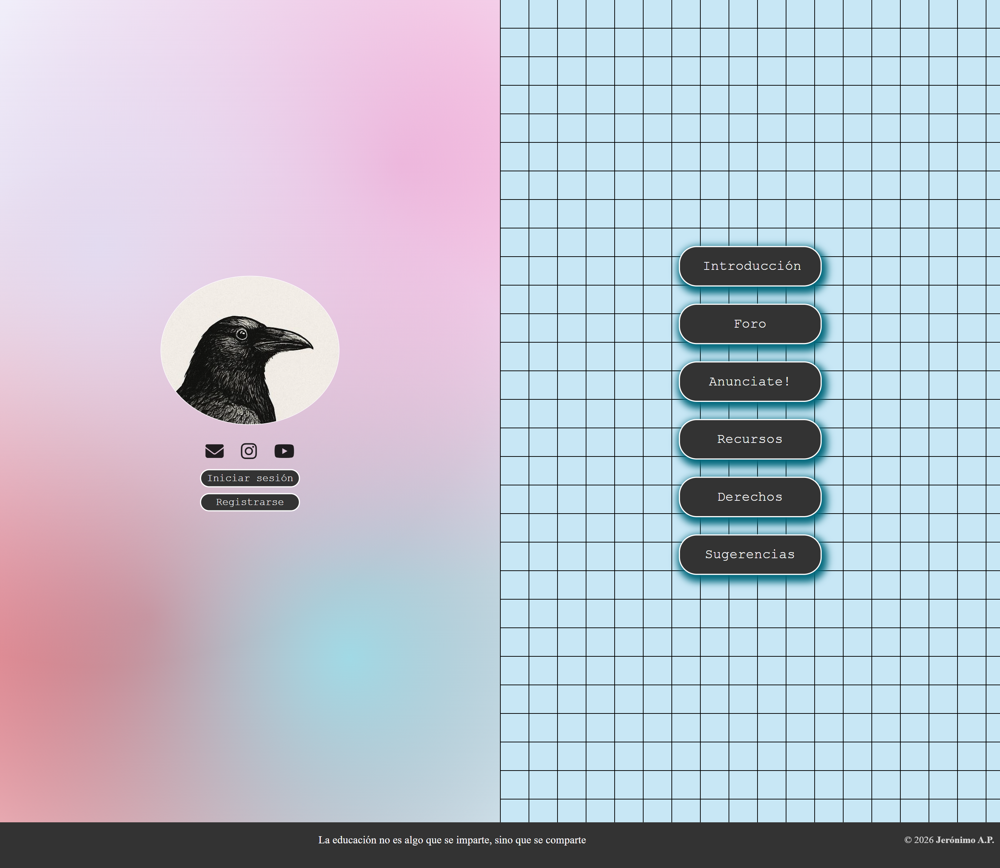
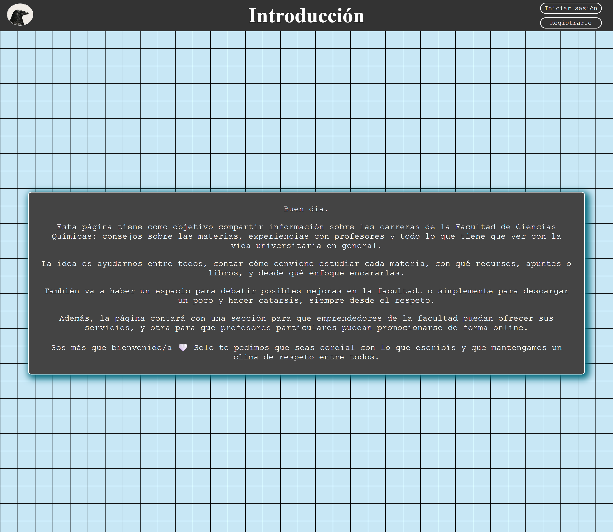
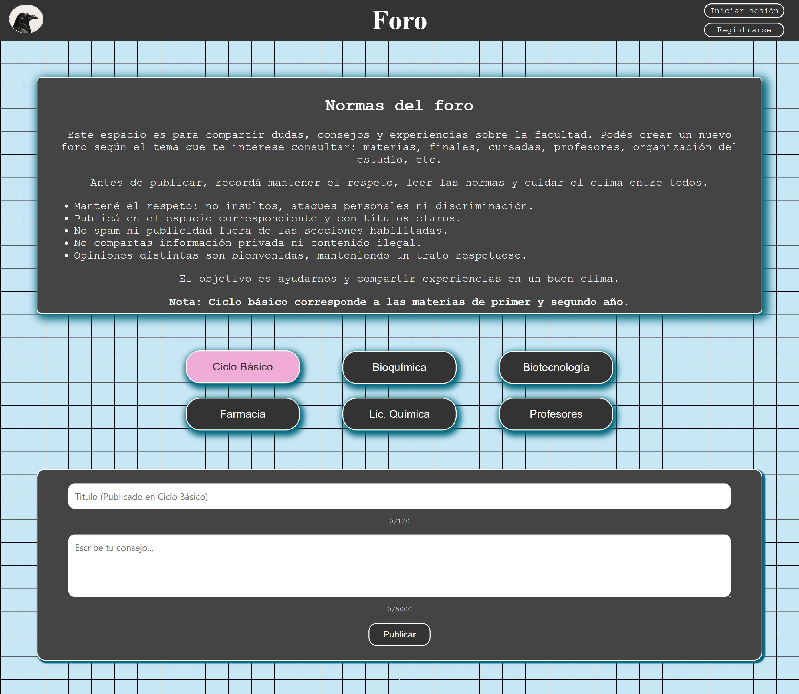
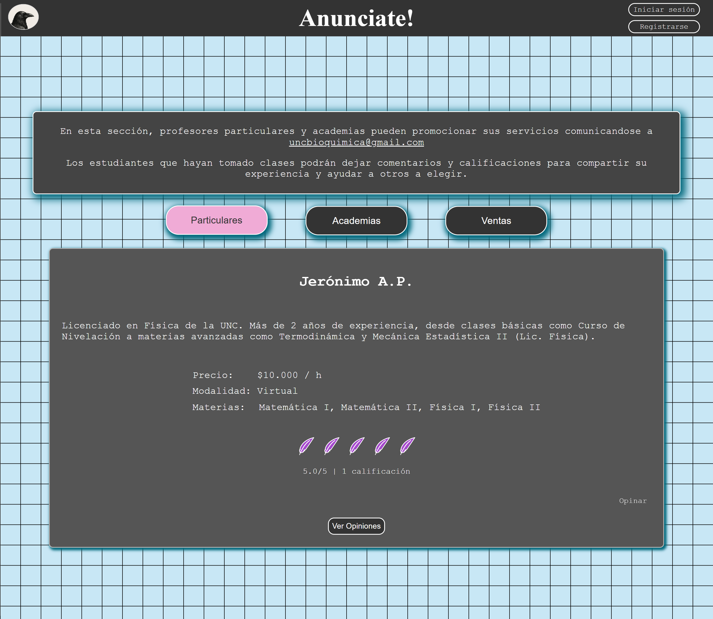
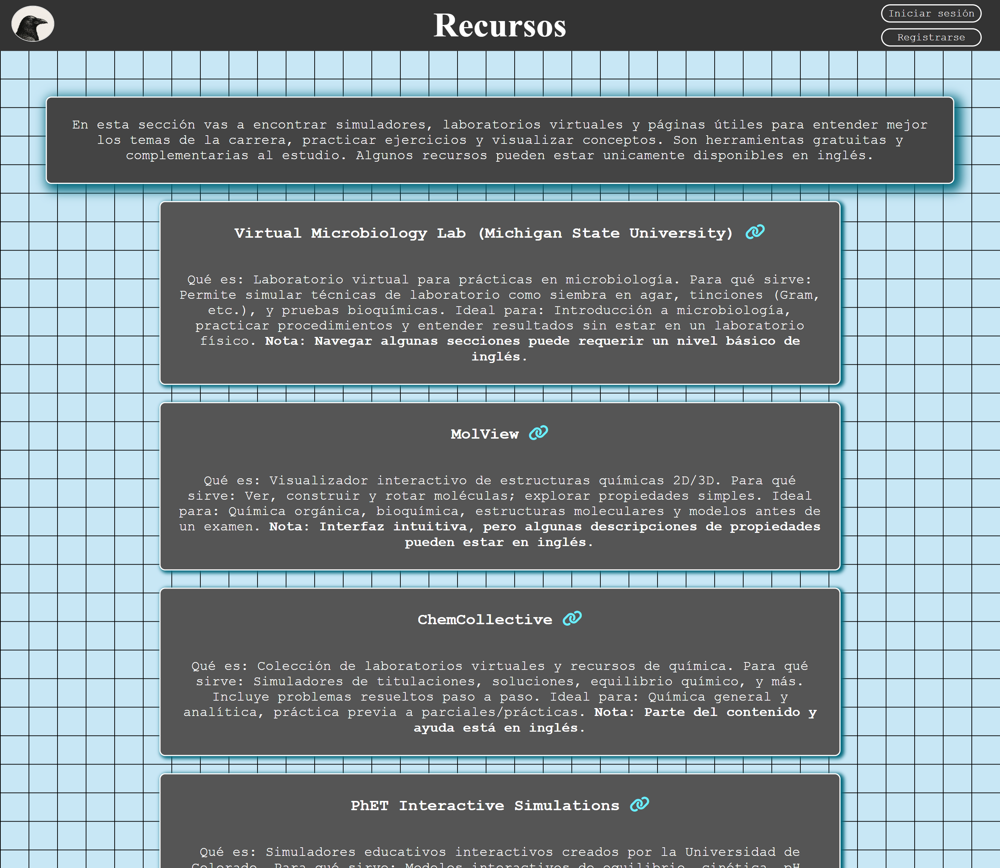
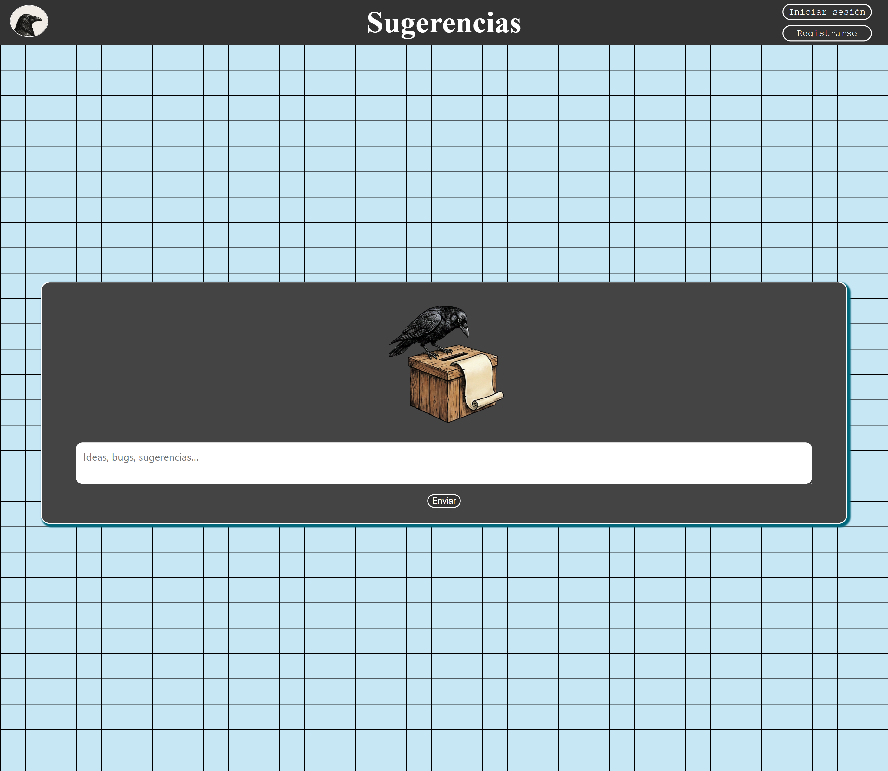

Student Site
bioquimicaunc.com - Academic Community Platform






bioquimicaunc.com is a student-focused academic platform designed to centralize course material, announcements, and community interaction for the Bioquímica program.
The site was built with an emphasis on clarity, accessibility, and maintainability, using modern HTML, CSS, and JavaScript practices.
It includes structured content sections, responsive layouts, and interactive elements, and was developed with future backend expansion in mind.